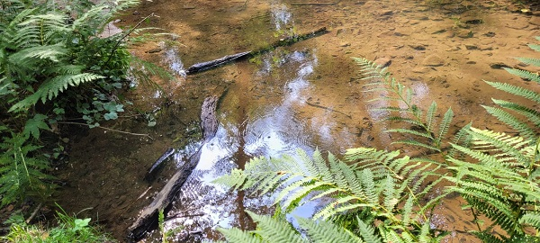

| https://fleursauvageyonne.github.io/ |

et d'ailleurs |

Forêt d'Avallon, 17 août 2026 © Claire Martin-Lucy |
 René Barbier - Poèmes - par Carolyne Cannella René Barbier - Poèmes - par Carolyne Cannella |
| FLeurs SauVages de l'Yonne et d'ailleurs, nommé plus couramment en abrégé FLSVY a été soudainement emporté par la cascade implacable de sa feuille de style ! N'étant pas Gilliatt le Malin face à des balises (en l'occurrence dites meta) sur lesquelles ne se perchera aucun de ces cormorans si bénéfiques à la sabline à trois nervures, Moehringia trinervia, petite Caryophyllaceae de la tribu des Arenarieae, ce modeste herbier va donc vous présenter, poussant à quelques centaines de kilomètres de l'Yonne, une autre espèce de l'ordre des Caryophyllales, mais de la famille des Aizoaceae : Carpobrotus sp. (car peut-être un "complexe d'hybrides"), la griffe de sorcière, ficoïde à feuilles en sabre ou ficoïde comestible... en attendant d'être de retour pour vous souhaiter |
Bienvenue
Welcome / Bienvenidos / Välkommen / Benvenuto
добро пожаловать / مَرْحَبا / Chào mừng
いらっしゃいませ / 欢迎
pարի գալուստ
 |
►  |
Conception/maintenance informatiques
Annick Jani
Mise à jour : AOÛT 2026
 2005 à 2026 2005 à 2026 |
|